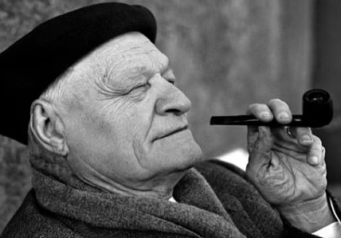
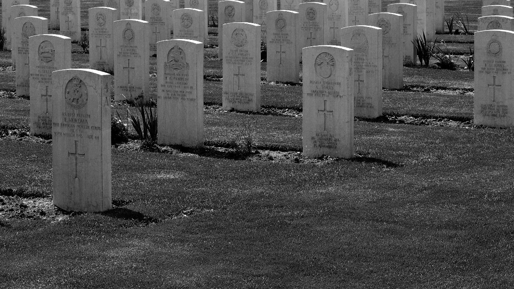
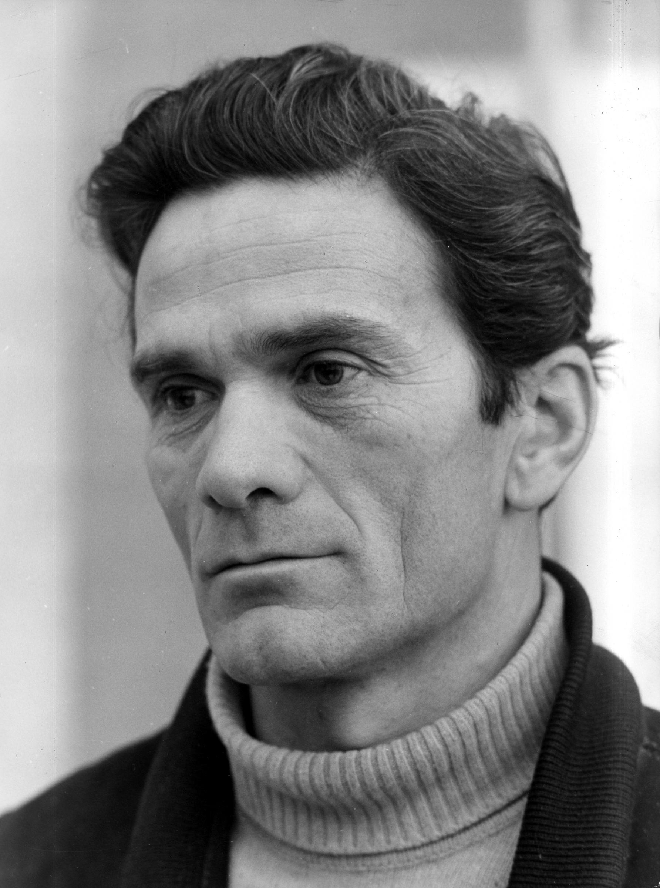
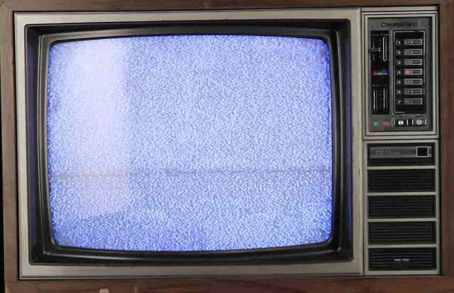
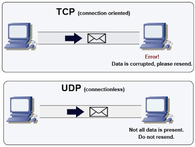
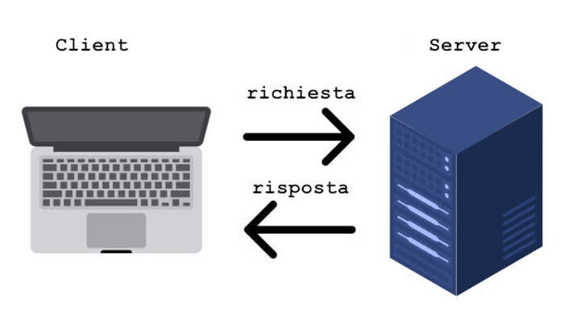
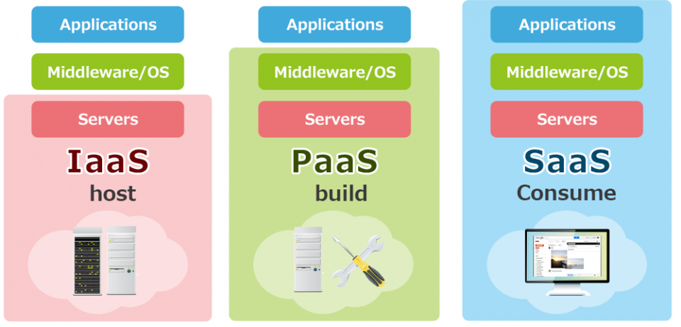
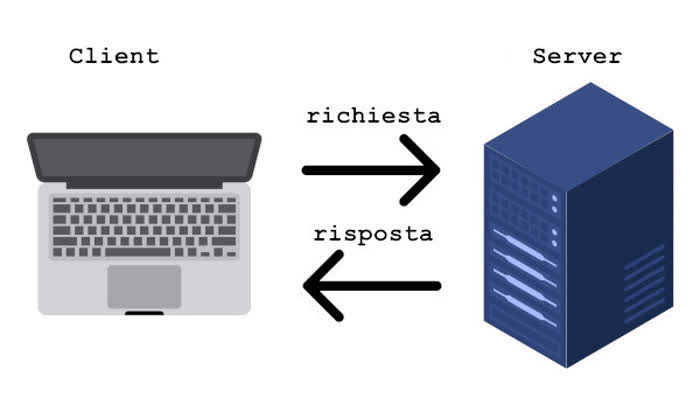
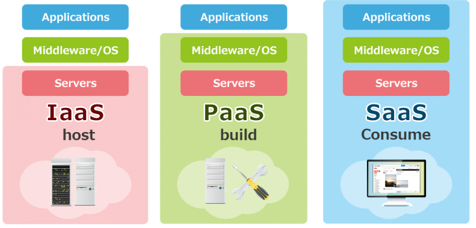

Storia
Prima guerra mondiale
La prima guerra mondiale scoppia nel 28 giugno 1914 a causa dell'assassinio
dell'arciduca d'Austria e coinvolge molti stati in tutto il mondo.
In questo conflitto si distinguono due fazioni:
-La triplice Alleanza : Austria, Germania e Italia.
-La triplice Intesa : Francia, Gran Bretagna e Russia.
La Germania attacca la Francia passando dai confini degli stati neutrali, prendendola alla sprovvista.
La guerra all'inizio si prospetta essere una guerra lampo, ma dopo le prime settimane le truppe francesi riesconno a fermare l'avanzata tedesca e i generali capiscono che la guerra sta diventando di posizione.
L'Italia si dichiara neutrale grazie alle caratteristiche difensive della triplice Alleanza, entra in guerra successivamente (nel 1915) schierata con la triplice intesa grazie al patto segreto di Londra che avrebbe ridato all'Italia svariati territori che erano in mano degli Austriaci.
La Germania attua una guerra sottomarina indiscriminata contro la flotta dell'Inghilterra, questa è anche una delle ragioni per cui in seguito L'America entra a far parte del conflitto.
L'Italia ottiene scarsi risultati e il generale dell'esercito Cadorna viene sostituito da Diaz, che riesce a rinvigorire il morale delle truppe, ferma l'avanzata Austriaca e costrinse l'Austria a firmare l'armistizio nel 1918.
Dopo poco tempo la Russia è costretta a ritirarsi dal conflitto a causa della caduta dello Zar.
L'entrata in guerra dell'America nel 1917 determina la sconfitta della triplice Alleanza e la fine della grande guerra.

Seconda guerra mondiale

La seconda guerra mondiale è tutt'ora il conflitto più grande del mondo, questa comincia nel 1939, quando Hitler invade la Polonia senza una dichiarazione di guerra.
Nel 1940 Hitler riesce a raggirare le difese francesi e conquista la Francia.
La Gran Bretagna riesce a difendersi dai continui attacchi della Luftwaffe e respinge l'avanzata di Hitler.
Nel 1940 l'Italia entra in guerra dopo un discorso di Mussolini.
Nel 1941 la Germania invade la Russia
Gli alleati sono formati da: Francia, Gran Bretagna e America.
L'asse è formata da: Germania, Italia e Giappone.
Hitler dal 41 comincia la "soluzione finale", ovvero lo sterminio degli ebrei nei campi di concentramento, dove muoiono più di 6 milioni di ebrei.
Comincia anche l'operazione barbarossa, dove i tedeschi invadono la Russia che era impreparata, quindi le forze tedesche riescono a guadagnare molto territorio in poco tempo, ma vengono fermati prima di arrivare a Mosca.
Italiano
Giuseppe Ungaretti

È stato uno dei più grandi poeti italiani del Novecento. Nato ad Alessandria d'Egitto, visse in varie città (Parigi, Roma, San Paolo del Brasile).
Partecipò come soldato alla Prima Guerra Mondiale, esperienza che influenzò profondamente la sua poesia.
La sua opera è caratterizzata da uno stile essenziale ed evocativo, che esprime emozioni profonde con poche parole.
È considerato un fondatore dell'Ermetismo, corrente poetica che punta alla concentrazione del linguaggio e alla ricerca di significati nascosti.
Negli ultimi anni, la sua poesia diventa più riflessiva e affronta temi come il tempo, il dolore, la memoria e la fede.
"Non gridate più" è una poesia scritta da Ungaretti dopo la Seconda Guerra Mondiale.
È un invito al silenzio e alla riflessione di fronte alla morte e alla distruzione causate dalla guerra.
Ungaretti chiede di non gridare, di non continuare a uccidere con l'odio e la distruzione, perché anche i morti meritano pace.
Il tono è solenne e doloroso, e il messaggio è un forte appello alla fine della violenza e alla riscoperta dell'umanità.

Pier Paolo Pasolini

È stato uno degli intellettuali più importanti del Novecento italiano: poeta, scrittore, regista, saggista e critico.
Nato a Bologna, ha vissuto tra il Friuli e Roma.
La sua opera è sempre stata segnata da un profondo impegno civile e politico, spesso controverso.
Pasolini ha raccontato con intensità il mondo degli emarginati, dei poveri, delle periferie urbane, denunciando l'ipocrisia della società borghese e i pericoli della massificazione culturale.
È stato un grande osservatore del cambiamento dell'Italia del dopoguerra, che secondo lui stava perdendo i suoi valori tradizionali sotto l'influenza del consumismo.
Nel cinema ha realizzato film innovativi, spesso provocatori, mescolando poesia, religione, sesso e politica (come Accattone, Il Vangelo secondo Matteo, Salò).
Morì assassinato nel 1975 in circostanze ancora oggi misteriose.
Pier Paolo Pasolini criticava duramente la televisione, che considerava uno strumento di omologazione culturale e sociale.
Secondo lui, la TV non era un mezzo neutro, ma trasmetteva un modello unico di pensiero, comportamento e consumo, facendo perdere all’individuo la propria identità, specialmente ai giovani e alle classi popolari.
Pasolini vedeva nella televisione il simbolo del nuovo potere borghese e consumista, capace di manipolare le masse in modo più sottile della dittatura.
La sua preoccupazione principale era che la TV stesse cancellando le culture popolari, i dialetti, le tradizioni e la libertà di pensiero, imponendo una lingua e uno stile di vita artificiale e standardizzato.
Per lui, la televisione non educava, ma distruggeva la coscienza critica, trasformando i cittadini in consumatori passivi.

Sistemi
livello trasporto

Il livello trasporto è uno strato del modello OSI e TCP/IP che si occupa di gestire la comunicazione tra computer in rete.
Questo garantisce che i dati vengano trasferiti in modo affidabile e corretto, controllando l'ordine dei pacchetti e la loro integrità.
Tra i protocolli più importanti di questo livello ci sono il TCP, che offre una connessione affidabile e orientata alla comunicazione, e l'UDP, che è più veloce ma non garantisce l'affidabilità.
Il livello trasporto si occupa anche di gestire il controllo del flusso e la gestione degli errori per assicurare una comunicazione efficiente.
livello applicazione
Il livello applicazione è il livello più alto nei modelli OSI e TCP/IP e si occupa di fornire servizi di rete direttamente alle applicazioni dell'utente.
È responsabile della gestione delle funzioni come la navigazione web, la posta elettronica e il trasferimento di file.
A questo livello operano diversi protocolli specifici per ogni tipo di servizio.
Un esempio è il protocollo HTTP (HyperText Transfer Protocol), che viene utilizzato per la trasmissione di pagine web tra client (come un browser) e server.
Quando un utente inserisce un indirizzo in un browser, HTTP permette di inviare la richiesta al server e ricevere come risposta la pagina desiderata.

Informatica
Modello client-server

Nel modello client-server, l'applicazione è divisa in due parti: il client, come un sito web o un'app mobile, e il server, cioè il backend.
Il client invia richieste al server per ottenere o modificare dati, mentre il server elabora queste richieste e restituisce una risposta.
Quando il backend utilizza API REST, la comunicazione tra client e server avviene tramite il protocollo HTTP, usando operazioni standard come ottenere dati, crearli, aggiornarli o cancellarli.
I dati sono solitamente scambiati in formato JSON.
Questo approccio consente di separare il frontend dal backend, rendendo l'architettura dell'applicazione più flessibile, scalabile e facilmente manutenibile.
Cloud computing
Il cloud computing è un modello che permette di accedere a risorse informatiche come server, storage, database e software tramite internet, senza doverle possedere fisicamente.
Invece di installare programmi o archiviare dati sul proprio computer, tutto viene gestito da server remoti accessibili online.
Questo approccio offre vantaggi come la scalabilità, il risparmio sui costi, l'affidabilità e la flessibilità, perché le risorse possono essere aumentate o ridotte a seconda delle esigenze.
Esistono diversi modelli di servizio:
IaaS, che fornisce infrastruttura come macchine virtuali
PaaS, che offre ambienti per sviluppare applicazioni
SaaS, che consente di usare software tramite il web.
Il cloud può essere pubblico, privato o ibrido, a seconda del livello di accesso e controllo.

Modello client-server

Nel modello client-server, l'applicazione è divisa in due parti: il client, come un sito web o un'app mobile, e il server, cioè il backend.
Il client invia richieste al server per ottenere o modificare dati, mentre il server elabora queste richieste e restituisce una risposta.
Quando il backend utilizza API REST, la comunicazione tra client e server avviene tramite il protocollo HTTP, usando operazioni standard come ottenere dati, crearli, aggiornarli o cancellarli.
I dati sono solitamente scambiati in formato JSON.
Questo approccio consente di separare il frontend dal backend, rendendo l'architettura dell'applicazione più flessibile, scalabile e facilmente manutenibile.
Cloud computing
Il cloud computing è un modello che permette di accedere a risorse informatiche come server, storage, database e software tramite internet, senza doverle possedere fisicamente.
Invece di installare programmi o archiviare dati sul proprio computer, tutto viene gestito da server remoti accessibili online.
Questo approccio offre vantaggi come la scalabilità, il risparmio sui costi, l'affidabilità e la flessibilità, perché le risorse possono essere aumentate o ridotte a seconda delle esigenze.
Esistono diversi modelli di servizio:
IaaS, che fornisce infrastruttura come macchine virtuali
PaaS, che offre ambienti per sviluppare applicazioni
SaaS, che consente di usare software tramite il web.
Il cloud può essere pubblico, privato o ibrido, a seconda del livello di accesso e controllo.
